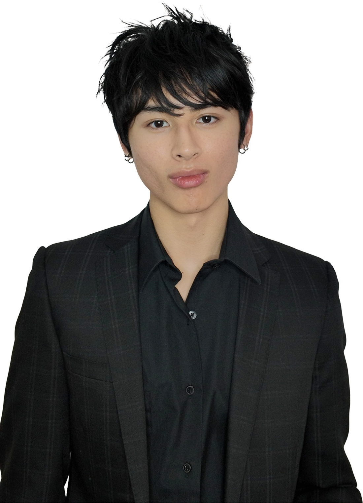
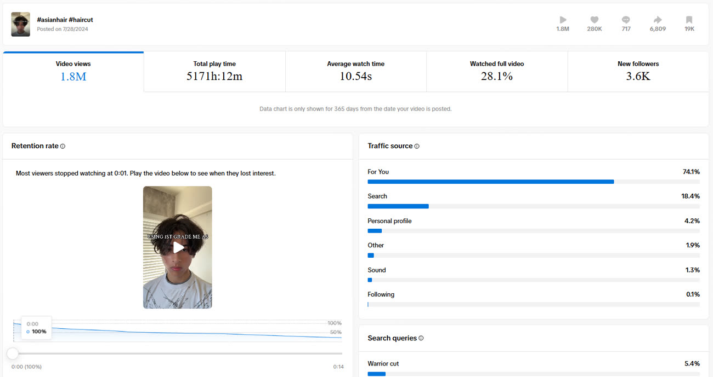
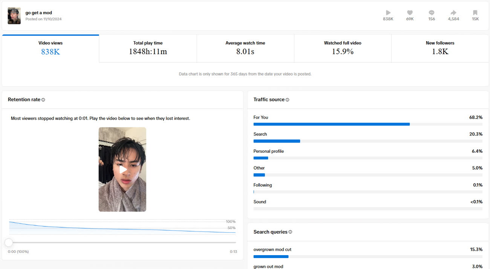
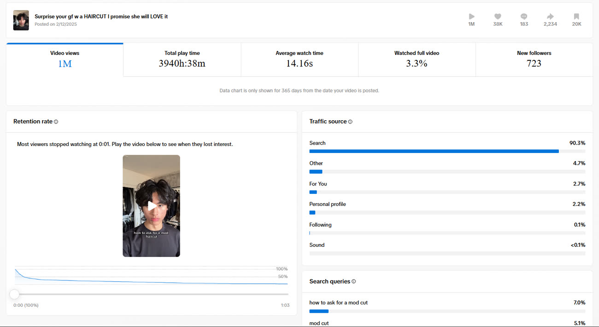
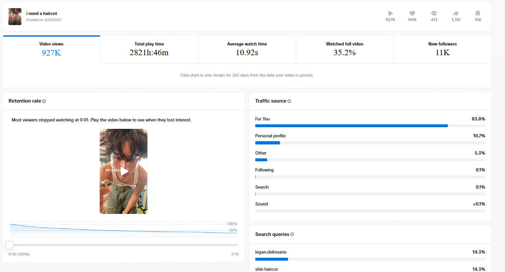
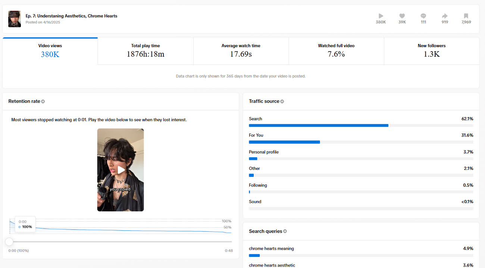
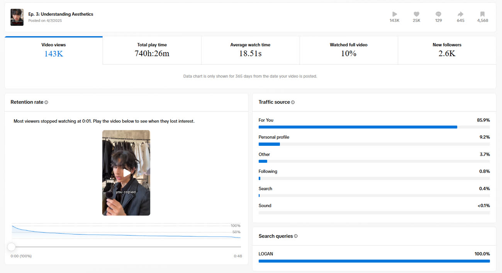
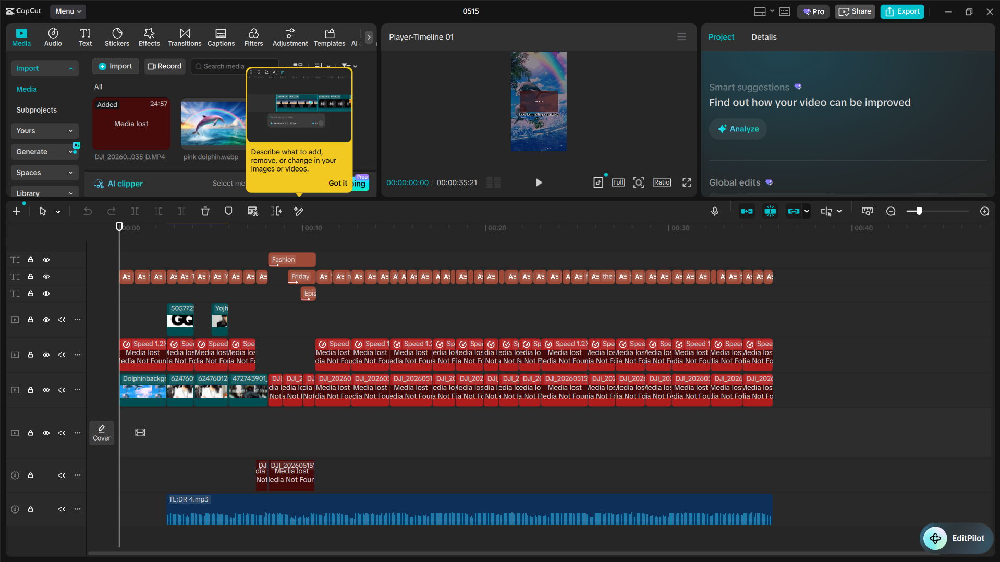

Founder — DOREN Advisory
LA
Logan DelRosario
I built my own audiences in hair & fashion, then reverse-engineered why they grew — now I'm building them for brands across every industry. A creator's instinct, run like a growth system.

Origin
From one viral clip to a defined audience — and eventually, a practice.
It started with a school interview that unexpectedly took off. Right after, I found my footing posting fit-check videos — and an audience formed almost overnight.
I built an audience of high-school students experimenting with fashion — primarily young Asian men. From the very beginning, I've been laser-focused on that ICP.
After 2–3 years of learning directly from my own audience, I opened DOREN Advisory to apply the same methods to companies and other creators.
Selected Work
Two niches I've owned — top performers, with the numbers behind them.
Recreating My Childhood Hair
TikTok · Posted Jul 28, 2024
Overgrown Mod
TikTok · Posted Nov 10, 2024
Mod Haircut Tutorial
TikTok · Posted Feb 12, 2025
Green Fit Check
TikTok · Posted Jan 23, 2023
Chrome Hearts Dive
TikTok · Ep. 7 · Posted Apr 16, 2025
Understanding Aesthetics
TikTok · Ep. 3 · Posted Apr 7, 2025
Process
How the videos actually get made — editing and scripting.
Editing
I'm an advanced CapCut Pro user. Even when raw footage is messy or hard to clip, I produce top-tier quality on clean, organized timelines — and I've experimented with AI clipping tools to move faster.
Given the views, retention, and follower metrics my edits earn, I'm confident in my ability to cut consumable video at pace.

Scripting
I identify what people care about and package it into series. My hit series “How to Dress Good” has earned over 5M views and 30K+ followers.
First I find popular topics and filter out what's just momentarily trending. Then I research deeply — picking up niche slang, humor, and news other creators miss — and write a punchy 45s–2min script optimized for delivery.
Every script lives cleanly in a Google Doc so I can annotate and study analytics: click-off rates, retention, and comments that reference specific moments in the video.
Metrics
Why I stopped trusting views & followers alone.
Views and followers don't tell you whether a community is actually strong or growing — a real problem once I started helping startups grow their own channels. So I built a guideline and tested new metrics on my own videos first. These four now drive how I plan and review content.
View Rate
Engagement Rate
Conversion Proxy
Drop-off Rate
Experience
Independent creator with Sun Talent, and founder of DOREN Advisory — where I optimize GTM for companies.
CYBHI — State of California
Selected for the Children & Youth Behavioral Health Initiative to connect with Asian youth around mental health. I planned, scripted, and edited three videos on my own experience with mental-health struggles and stress management — each built with a hook, personal anecdote, and CTA.
CYBHI information →AGMNT — Tech & Fashion Startup
Over a 2-month paid contract I worked directly with the CEO and CMO on marketing strategy and event economics — marketing planning, in-person event-sales optimization, and online community growth. I trained their marketing team in editing, camera performance, and consumer intuition.
I solidified their ICP, organized their strategy in Google Docs/Drive, and gave insight from both the consumer and producer side. My core GTM play: target Bay-Area micro-influencers (under 10K), invite them to bring friends in exchange for free drinks, and make them feel important — so each event outperformed the last.
AGMNT website →Let's build
something.
Creator collaborations, brand partnerships, or GTM & social-growth advisory through DOREN.